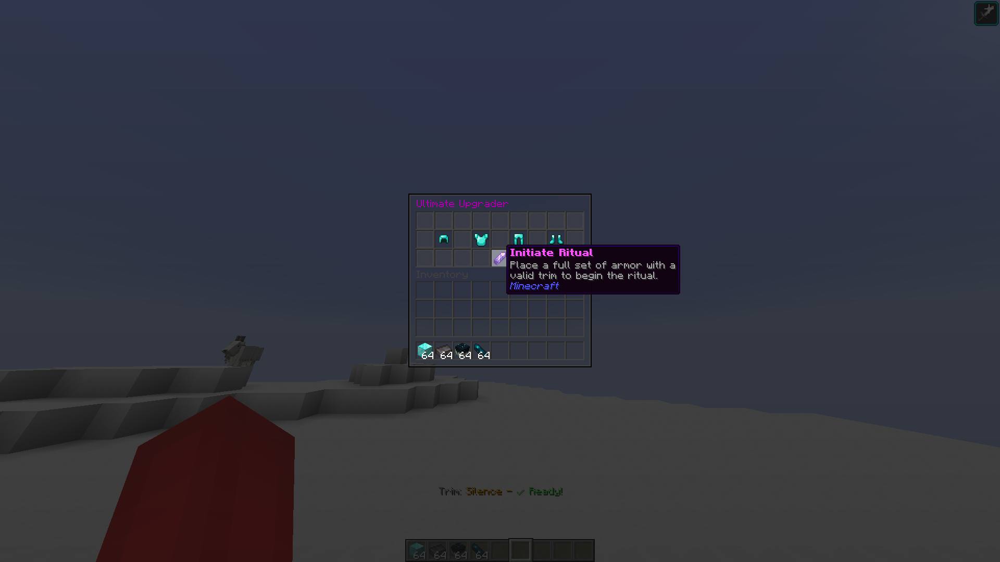

Give Your Armor Real Power
PowerTrims is a plugin that turns cosmetic armor trims into useful abilities, adding new gameplay and strategy to your server.
Get The PluginKey Features
PowerTrims is designed to be powerful, fair, and easy to manage.
17+ Unique Abilities
Give your players new powers to use, based on the armor trims they find and equip in the world.
Ultimate Abilities
Players can perform in-game rituals to unlock even stronger "Ultimate" versions of their trim abilities.
Easy Configuration
Use the detailed config file to change every setting you want, from ability damage to cooldowns.
Made for Teams
The built-in /trust system lets players team up without worrying about hitting friends with their powers.
Explore The Plugin
Learn more about the features and how to get started.
View All Abilities
See a complete list of every trim ability and what it does.
Learn About Rituals
Discover how to upgrade your armor to unlock powerful Ultimate Abilities.
Read the Config Guide
Get a full breakdown of the configuration options and commands.
Join the Community
Get support, ask questions, and share your ideas with other players.
All Trim Abilities
Click on any trim to learn its stats and how to use it effectively.
Sentry
Click to see ability
Silence
Click to see ability
Vex
Click to see ability
Ward
Click to see ability
Wild
Click to see ability
Coast
Click to see ability
Dune
Click to see ability
Eye
Click to see ability
Host
Click to see ability
Raiser
Click to see ability
Rib
Click to see ability
Snout
Click to see ability
Spire
Click to see ability
Tide
Click to see ability
Wayfinder
Click to see ability
Flow
Click to see ability
Bolt
Click to see ability
How to Get Ultimate Abilities
Upgrade a full set of matching trimmed armor to unlock a more powerful "Ultimate Ability." Here is how it works.
Step 1: Start the Upgrade
To begin, simply type the command /upgrade in your chat. This will open the Ultimate Upgrader window.

Step 2: Place Your Armor
Inside the Ultimate Upgrader, place a full set of armor (helmet, chestplate, leggings, and boots). All four pieces must have the same armor trim pattern (e.g., all Sentry, or all Ward).
Step 3: Initiate the Ritual
Once the full, matching set of armor is in place, click the "Initiate Ritual" button. If successful, the ritual will begin, and your armor set will be upgraded to its Ultimate form.
Sentry Trim
Unleashes a volley of armor-piercing arrows.
| Stat | Value |
|---|---|
| Cooldown | 75 Seconds |
| Arrow Count | 3 |
| True Damage | 0.5 per arrow |
Best Used For...
Starting a fight with guaranteed damage, especially against heavily armored foes. It's most effective at medium range where all arrows can hit the same target.
Back to All AbilitiesSilence Trim
Creates a zone where foes cannot use certain abilities.
| Stat | Value |
|---|---|
| Cooldown | 75 Seconds |
| Radius | 15 Blocks |
| Duration | 20 Seconds |
Best Used For...
Controlling PvP encounters. Trap players who rely on Ender Pearls or shut down other PowerTrim users in a large team fight. It's a strategic game-changer.
Back to All AbilitiesVex Trim
Emits a sonic boom, damaging and weakening nearby enemies.
| Stat | Value |
|---|---|
| Cooldown | 100 Seconds |
| Radius | 30 Blocks |
| Damage | 8.0 (4 Hearts) |
Best Used For...
Massive area-of-effect damage. Use it to clear large groups of monsters or to turn the tide in a major battle when surrounded.
Back to All AbilitiesWard Trim
Summons a divine shield for protection.
| Stat | Value |
|---|---|
| Cooldown | 100 Seconds |
| Absorption Level | 4 (8 extra hearts) |
| Resistance Level | 2 |
Best Used For...
Surviving lethal damage. Activate it right before a big hit (like a Creeper explosion or a powerful player attack) to stay in the fight.
Back to All AbilitiesWild Trim
Launches a grapple hook for mobility and control.
| Stat | Value |
|---|---|
| Cooldown | 16.6 Seconds |
| Grapple Range | 60 Blocks |
Best Used For...
Repositioning. Use it to escape danger, get to high ground, or pull a specific enemy out of formation and into your team's grasp.
Back to All AbilitiesCoast Trim
Creates a watery vortex to pull and slow enemies.
| Stat | Value |
|---|---|
| Cooldown | 50 Seconds |
| Radius | 30 Blocks |
| Damage | 10.0 (5 Hearts) |
Best Used For...
Crowd control. Gather up a group of scattered enemies, making them easy targets for follow-up attacks from you or your teammates.
Back to All AbilitiesDune Trim
Summons a damaging and blinding sandstorm.
| Stat | Value |
|---|---|
| Cooldown | 50 Seconds |
| Radius | 12 Blocks |
| Damage | 10.0 (5 Hearts) |
Best Used For...
Area denial. Block off a path, obscure vision, or damage enemies who are hiding behind cover. It's great for controlling key points on the map.
Back to All AbilitiesEye Trim
Grants True Sight, revealing entities through walls.
| Stat | Value |
|---|---|
| Cooldown | 100 Seconds |
| Radius | 80 Blocks |
| Duration | 30 Seconds |
Best Used For...
Intelligence and anti-stealth. Activate it when you suspect an invisible player is nearby or to find enemies hiding in a base.
Back to All AbilitiesHost Trim
Siphons health and beneficial effects from a target.
| Stat | Value |
|---|---|
| Cooldown | 100 Seconds |
| Health Steal | 4.0 (2 Hearts) |
| Radius | 10 Blocks |
Best Used For...
Dueling. The perfect counter to an enemy who has just used a Golden Apple or a powerful potion. Steal their advantage and make it your own.
Back to All AbilitiesRaiser Trim
Lifts nearby enemies helplessly into the air.
| Stat | Value |
|---|---|
| Cooldown | 100 Seconds |
| Radius | 15 Blocks |
Best Used For...
Setting up combos. Pop your enemies into the air, leaving them vulnerable and unable to move for a few crucial seconds.
Back to All AbilitiesRib Trim
Summons a loyal Skeleton archer to fight for you.
| Stat | Value |
|---|---|
| Cooldown | 50 Seconds |
| Minion Lifespan | 60 Seconds |
Best Used For...
Creating a distraction. The skeleton can draw enemy fire or deal consistent damage from a distance while you focus on other targets.
Back to All AbilitiesSnout Trim
Calls upon a powerful Zombified Piglin to defend you.
| Stat | Value |
|---|---|
| Cooldown | 100 Seconds |
| Minion Lifespan | 90 Seconds |
Best Used For...
A personal bodyguard. The Zombified Piglin is a strong melee combatant that can protect you or help you push an objective.
Back to All AbilitiesSpire Trim
Dash through enemies, leaving them vulnerable.
| Stat | Value |
|---|---|
| Cooldown | 25 Seconds |
| Dash Distance | 8 Blocks |
| Damage Amp | +60% damage taken |
Best Used For...
Aggressive plays. Dash in to make a high-priority target vulnerable, then let your team focus fire to take them down quickly.
Back to All AbilitiesTide Trim
Create a massive wave of water to push back enemies.
| Stat | Value |
|---|---|
| Cooldown | 100 Seconds |
| Knockback | Very High |
Best Used For...
Creating space. Use it to knock players off cliffs or ledges, or simply to push back an overwhelming force to give your team room to breathe.
Back to All AbilitiesWayfinder Trim
Briefly gain a burst of speed and an enhanced jump.
| Stat | Value |
|---|---|
| Cooldown | 100 Seconds |
Best Used For...
Mobility. A simple but effective tool for escaping danger, chasing a fleeing target, or quickly navigating difficult terrain.
Back to All AbilitiesFlow Trim
Sacrifice life force for a massive boost in power.
| Stat | Value |
|---|---|
| Cooldown | 50 Seconds |
| Health Cost | 1 Heart per second |
Best Used For...
High-risk, high-reward pushes. Activate it for a short burst of incredible speed and strength to finish a fight, but be ready to retreat before the health cost becomes too great.
Back to All AbilitiesBolt Trim
Call down a lightning strike that chains between targets.
| Stat | Value |
|---|---|
| Cooldown | 16.6 Seconds |
| Max Chains | 3 Targets |
Best Used For...
Punishing grouped-up enemies. The chain lightning is devastating when enemies are close together, making it a powerful tool in team fights.
Back to All AbilitiesJoin the Community
Have questions, need support, or want to share ideas? Join our community!
Get PowerTrims
Ready to add new abilities to your server? Download the latest version of the plugin.
Download on Modrinth Releases on GitHubConfiguration Guide
Learn how to customize every aspect of the PowerTrims plugin.
Using the `config.yml` File
For direct control, edit the file at /plugins/PowerTrims/config.yml. This is the only way to configure the plugin.
File Structure
- global: Settings that affect the whole plugin.
- trims: A list to turn each trim ability on or off server-wide.
- trim-abilities: The main section where you can change the stats for every ability.
# Example:
trim-abilities:
sentry:
primary:
arrow_count: 3
cooldown_ticks: 90000After saving your changes, run /powertrims reload in the console for them to take effect.